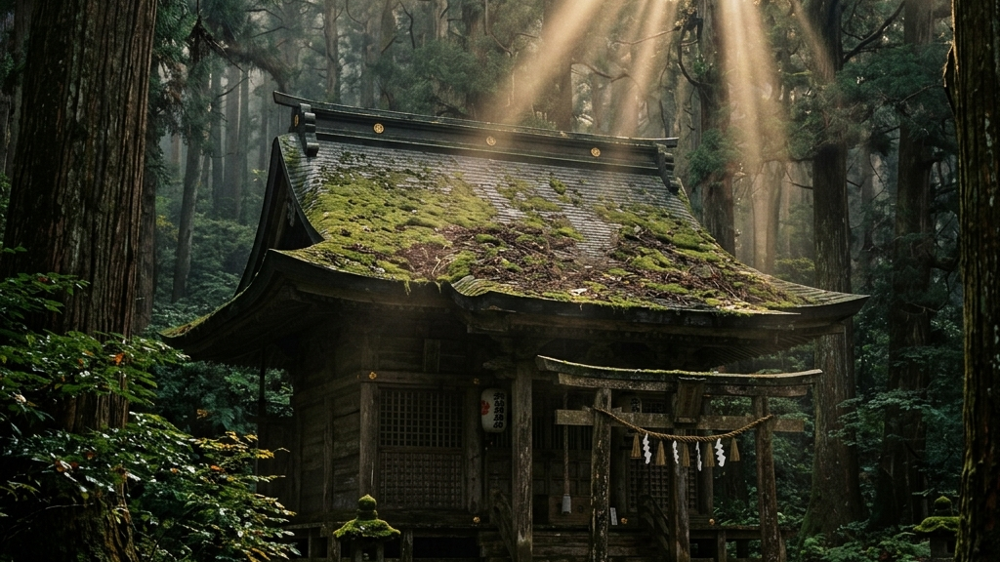
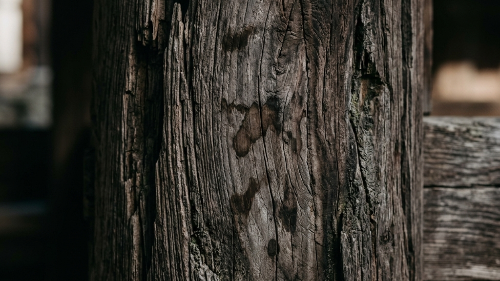
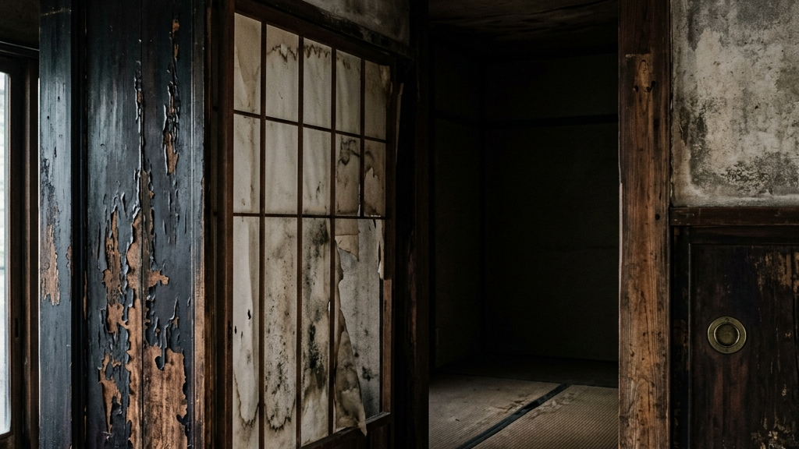
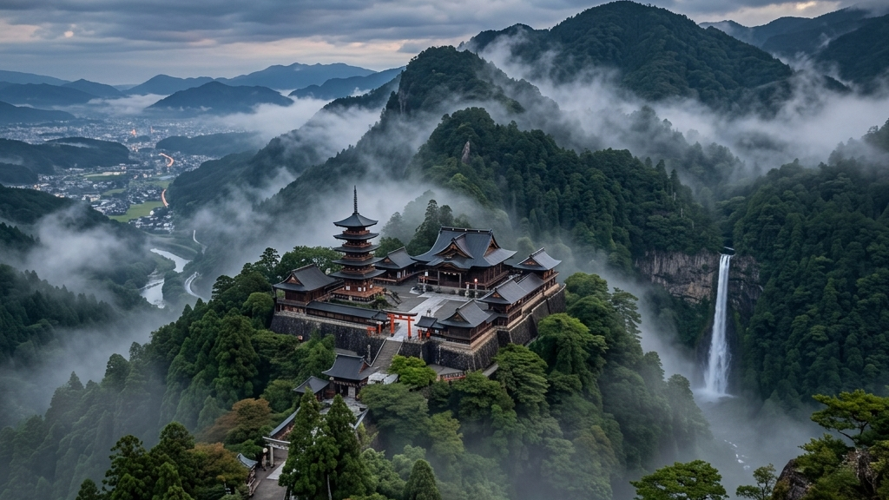
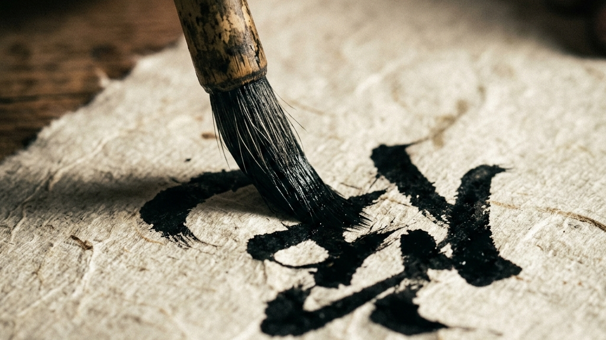
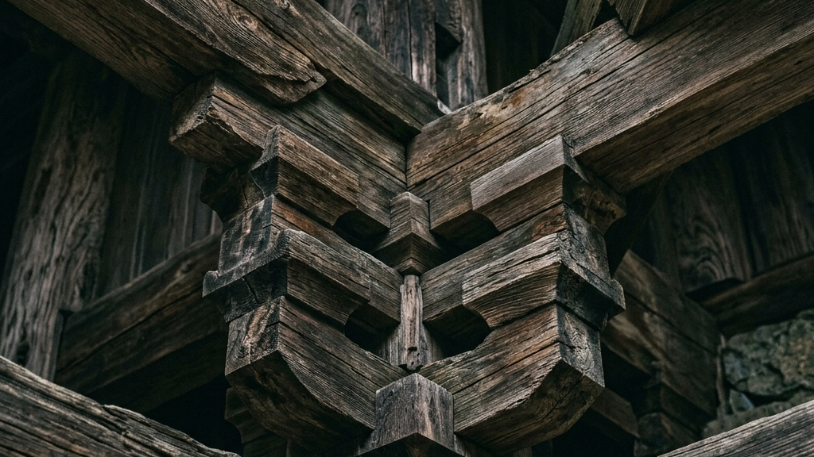
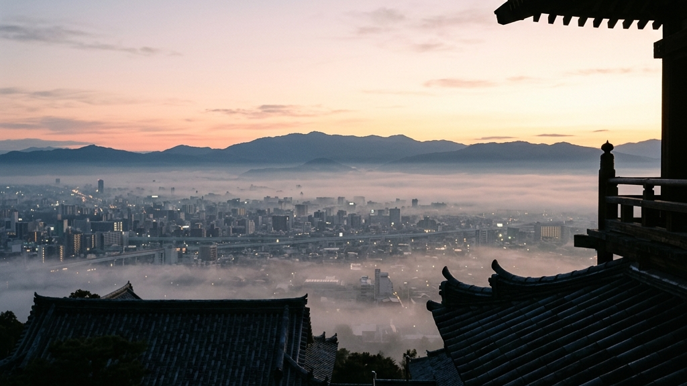
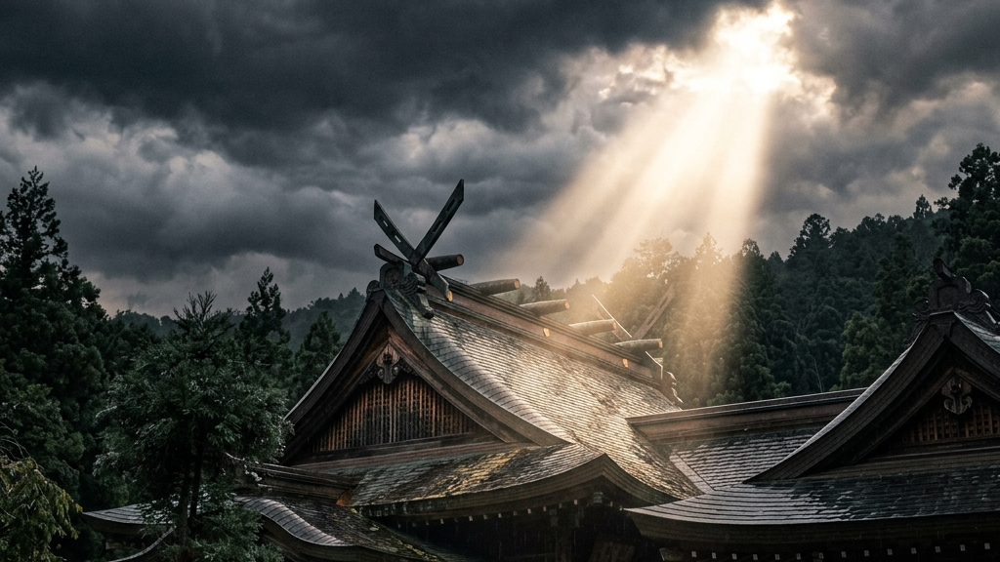
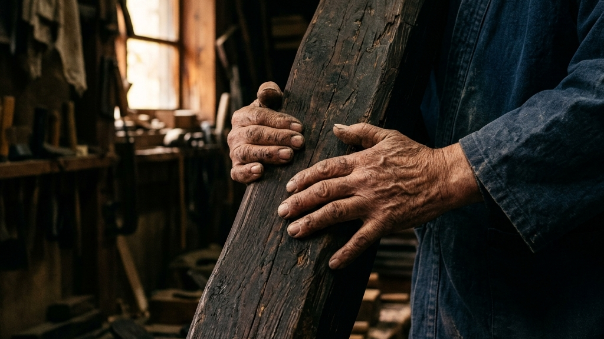
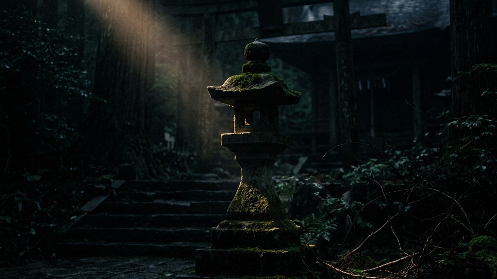

杜の都・仙台の精神的支柱として、約150年にわたり伊達政宗の御霊を護り続けてきた青葉神社。毎年5月の青葉まつりでは、政宗公神輿渡御の出発点として市民の熱狂を一身に集めるこの聖域が、今、静かに崩壊の危機に直面しています。華やかな観光地としての表層からは見えない「あと10年持つかどうか」という過酷な現実。本稿では、国の登録有形文化財を維持するための理不尽な重圧と、それに抗い、血の通ったエコシステムを構築しようとする地域コミュニティの泥臭い防衛戦に迫ります。
【本稿で紐解く3つの核心】
私たちが普段何気なく手を合わせる神社の本殿や拝殿は、決して無限にそこに在り続けるものではありません。歴史という重みを背負った木造建築は、常に自然界の容赦ない浸食に晒されており、それを押し留めるためには、美辞麗句では済まされない莫大な資本と執念が必要不可欠です。文化財の継承が綺麗事だけで語られがちな現代において、青葉神社が突きつけられた「限界」は、日本全国の文化遺産が抱える共通の痛みでもあります。

「あと10年持つかどうか。危機的ですね」――青葉神社で権禰宜を務める片倉圭司氏の言葉には、一切の誇張も感傷も含まれていません。ただ冷徹に、目の前に横たわる限界を直視した当事者のみが発し得る重みが存在します。1874年（明治7年）に創建された青葉神社において、伊達政宗の正室・愛姫（めごひめ）を祀っていた旧愛姫社鞘堂は、今や白アリの深刻な浸食によってその構造自体が危ぶまれる事態に陥っています。
「政宗公は仙台市民の宝。まつられている所をこんな状態にしておくのはだめなので、ちゃんと直したい」
— 責任役員 深松努氏の葛藤と誓い
歴史的な建造物を「残す」という行為は、外から見るほど牧歌的で美しいものではありません。太宰府天満宮本殿の124年ぶり改修と仮殿解体が証明したように、伝統建築の維持とは、何世代にもわたって自然の理不尽と戦い続ける終わりのない防衛戦です。青葉神社の場合、問題はさらに深刻です。昭和3年（1928年）に建造され、国の登録有形文化財に指定されている拝殿すらも、雨漏りによって内部が激しく損傷しています。雨の量がひどい時には水が直接滴り落ち、「参拝者にも失礼に当たる」という極限状態にまで追い詰められているのです。
ここで特筆すべきは、神社の運営側がこの「見せたくない弱み（老朽化と資金不足）」を隠蔽するのではなく、真っ向から自己受容し、SNSやクラウドファンディングという形で世間にさらけ出す決断を下した点です。権威ある文化財がその窮状を外部へ発信することは、ある種のプライドの解体を伴います。しかし、彼らはちっぽけな体面を守ることよりも、伊達政宗という巨大な記憶の器を1,000年先へ繋ぐための「泥臭い生存戦略」を選択しました。それは、自らが傷つくリスクを背負ってでも、事実を握りに行き、突破口を開こうとする強烈な執念の表れと言えます。
伊達政宗の御霊を祀る聖域として仙台市に青葉神社が創建され、市民の精神的支柱となる。
現在の拝殿が建造。後に国の登録有形文化財に指定されるが、この木造建築が100年後の過酷な試練の発端となる。

有形文化財として指定されることは、国からその歴史的価値を公に保証されるという名誉であると同時に、決して降ろすことのできない「呪縛」を背負うことでもあります。文化財保護法という厳格な枠組みの中では、現代の利便性や経済的合理性を優先して安易に素材を置き換えたり、構造を近代化したりすることは許されません。文化財保護の未来をひらく栃木県のクラウドファンディング活用戦略でも明白なように、当時の工法と素材に忠実に修復するという制約は、ランニングコストを幾重にも跳ね上がらせ、所有者である神社の経営を水面下で確実に圧迫していきます。
青葉神社の拝殿は、昭和初期の高度な木造建築技術の結晶でありながら、その内部は無惨にも雨水に侵食されています。「雨の量がひどい時には落ちてくる」。片倉権禰宜が語るこの生々しい描写は、ただの設備の不具合ではなく、歴史という重みを支えきれなくなった躯体（くたい）の悲鳴そのものです。さらに、旧愛姫社鞘堂の白アリ被害は、建物の心臓部である柱や梁を音もなく喰い荒らし、建物の倒壊という最悪のシナリオを現実のものとして突きつけています。
私たちはしばしば、神社仏閣を「不変の空間」として消費しがちです。境内を歩き、おみくじを引き、荘厳な空気に浸って日常へと帰っていく。しかし、その静寂な景観の裏側には、常に「理不尽な自然現象」との泥臭い戦いが存在しています。鎌打ち神事と鳥居再建 中能登町・鎌宮諏訪神社が示す復興の形が痛烈に物語っているように、伝統とは放置すればたちまち自然に飲み込まれ、朽ち果てていく極めて脆弱な存在なのです。
The Paradox of Conservation
「どうせ国や行政がなんとかしてくれるだろう」という世間の無意識の甘えは、ここでは通用しません。国登録有形文化財であっても、国からの補助金は全額をカバーするわけではなく、残りの莫大な修繕費用は神社側の自己負担となります。少子高齢化と氏子離れが進む現代において、神社の限られた自己資金だけでこの理不尽な重圧を跳ね返すことは、物理的にもはや不可能なフェーズに突入しているのです。青葉神社の直面する老朽化問題は、決して対岸の火事ではなく、日本が誇る「歴史という資産」が、資本主義の論理の中でいかに限界を迎えつつあるかを如実に示す縮図と言えるでしょう。

杜の都を訪れる多くの人々が、仙台駅からのアクセスを調べてまで青葉神社へ足を運ぼうとする事実は、この場所が今なお「一度は訪れるべき目的地」として強烈な磁場を放っている証です。しかし、物理的な距離を乗り越えて訪れる参拝客の多くは、この神域が抱える水面下の悲鳴に気づきません。仙台駅から決して至便とは言えないこの立地は、かつての伊達政宗が意図した都市計画の痕跡であり、杜の都の精神的磁場としての静寂を保つための必然的な「余白」でもありました。同じく伊達文化を象徴する大崎八幡宮への巡礼ルート（青葉神社から大崎八幡宮へ）とも結びつき、ここは数百年にわたり、仙台という都市の「見えない防波堤」として機能してきたのです。
毎年5月に開催される「仙台・青葉まつり」において、青葉神社は単なる通過点ではなく、物語の絶対的な起点となります。伊達政宗の御霊を乗せた神輿が神社を出発し、市内中心部を巡行するその光景は、1962年（昭和37年）から続く圧倒的な熱量の連鎖です。奄美大島八月踊り 大和村4集落が示す無形民俗文化財の新たな防波堤の事例が示す通り、地域における祭事は単なるイベントではなく、共同体の精神的な紐帯を再確認するための「生存儀式」です。しかし、その神輿が帰還する絶対的な聖域（拝殿）が白アリに蝕まれ、雨漏りに晒されているという事実は、あまりにも理不尽なパラドックスと言わざるを得ません。華やかな祭りの表層と、それを根底で支える躯体の崩壊。この乖離こそが、「観光地としての神社」と「文化財としての限界維持費」の間に横たわる決定的な断絶なのです。

近年、青葉神社を訪れて御朱印や御朱印帳を求める人々の姿は、この場所における象徴的な光景として定着しています。スマートフォンの画面では決して得られない、墨の匂いや朱印の重み。そこには確かに、デジタル全盛の時代にあっても失われない「手仕事の痕跡」を求める人々の渇望があります。片倉権禰宜をはじめとする神職の方々が、一枚一枚手書きで授与する御朱印や、境内で静かに渡される「お守り」は、単なる観光記念のスタンプラリーではありません。弥治郎こけしの造形美と絵付け 白石市が繋ぐ手仕事の身体感覚と同様に、それは何百年も前から続く「神仏への浄財」という、最も原始的で強力なエコシステムの可視化なのです。
本来、御朱印の初穂料や祈祷料は、そのまま社殿の修復や祭祀の維持へと還元される「命の血液」でした。しかし、雨漏りや白アリによって躯体の深部から崩壊が始まった今、従来の「参拝のついで」としての浄財だけでは、莫大な限界維持費に到底追いつきません。そこで青葉神社が取り組もうとしているのが、境内を使った「マルシェ」の開催や、SNSを用いたダイレクトな支援の呼びかけといった、従来のアナログな祈りのエコシステムを現代のフォーマットへと拡張する試みです。これは、神職という立場に甘んじることなく、自ら泥臭く行動を起こし、神社の存続を参拝者の「消費」から「共犯関係」へと昇華させるための極めて攻撃的な戦略と言えます。
From Consumption to Co-creation
寄付や祈祷料といった浄財が持つ意味合いも、ここに来て劇的なパラダイムシフトを迎えています。文化財への寄付と税制上の控除に注目が集まる現代において、支援者たちはただ盲目的にお金を出すわけではありません。税制上のメリットやクラウドファンディングのリターンといった「合理的な設計」が介在することで、はじめて持続可能な支援が成立します。しかし、その根底に流れる精神性は極めてエモーショナルです。「自分のお金が、1,000年先の未来へ伊達政宗の記憶を残すための物理的な柱（防波堤）の一部になる」。この圧倒的な当事者意識（パトロンとしての自負）こそが、現代における最も高次元の「自己の再定義」であり、青葉神社がクラウドファンディングを通じて世間に突きつけた最大の価値の提示なのです。

有形文化財の修繕において、私たちが想像する以上に過酷な現実が存在します。それは「現代の合理主義がいっさい通用しない」という点です。例えば、白アリ被害や雨漏りに対して、現代の強固なコンクリートや安価な化学建材を用いれば、コストも工期も劇的に圧縮できるでしょう。しかし、文化財保護の厳格なルールの下では、100年前の「木」には同質の「木」を当てがい、当時のままの「工法」で、途方もない時間をかけて修復することが義務付けられます。西陣織 1200年の歴史と極限の分業制が織りなす最高峰の絹織物にも共通するように、本物を本物として維持するためには、安易なタイパ（タイムパフォーマンス）を徹底的に排除しなければならないのです。
この「非効率の極み」とも言える修復作業を担うのは、高度な専門技術を持った一部の宮大工や伝統職人たちです。しかし、彼らの数もまた年々減少し、彼らが使用する国産の漆や特殊な木材といった自然素材の価格は高騰の一途を辿っています。「あと10年持つかどうか」という片倉権禰宜の言葉の裏には、単に建物が崩れるという物理的な恐怖だけでなく、「あと10年を過ぎれば、それを修復できる職人や素材すらも日本から枯渇してしまうかもしれない」という、文化の生態系そのものの崩壊への強い危機感が込められているのです。
「効率化という名の暴力から、文化財をどう護るか」
— 限界維持コストと向き合う覚悟
それでもなお、なぜ彼らはこの呪縛とも言える重圧を手放そうとしないのでしょうか。それは、歴史という圧倒的な「重力」を背負うこと自体が、彼らの存在証明であり、誇りそのものだからです。効率や利益といった表面的なKPI（重要業績評価指標）で測れる現代のビジネスモデルとは異なり、文化財の維持管理には「進捗が見えない恐怖」が常に伴います。なぜ能登に揚げ浜式製塩が残ったのか 加賀藩の救済システムと土着の記憶が示すように、何百年も前に先人たちが敷いたレールの上を歩き、自らの代では決して完成を見ないかもしれない修復作業に、人生の膨大な時間を投下する。この「管理の余白」と「泥臭い摩擦」を許容する強さこそが、現代社会が最も見失いつつある本質的な価値なのです。

伊達政宗が仙台に築いた神社の本質を紐解くためには、かつて政宗公がこの地に都市を築いた際の「視座の高さ」に立ち返る必要があります。戦国という凄惨な時代を生き抜いた彼は、仙台という都市を単なる一過性の消費地として設計したわけではありません。地形を読み、川を配し、神社仏閣を要所に配置することで、自然災害や外敵から領民を護る「1,000年先の防波堤」としての都市構造を組み上げました。青葉神社が杜の都の静寂の中に鎮座しているのも、決して偶然の産物ではなく、そうした長大な時間軸を持った都市計画（エコシステム）の一部なのです。
目先の利益ではなく、数百年先の自然災害を見据えた強固なインフラストラクチャーの構築。
失われゆくコミュニティと誇りを結びつける、現代社会における見えない「精神的な防波堤」としての機能。
翻って現代の私たちはどうでしょうか。スマートフォンのアルゴリズムに最適化され、ほんの数秒の「待てない時間」に苛立ち、わかりやすい結論やタイパばかりを求める社会構造にどっぷりと浸かっています。しかし、青葉神社が突きつける「あと10年」という現実は、そうした近視眼的な私たちに対する強烈な警鐘です。「古いものを残す」という行為は、単に過去の遺物を愛でるノスタルジーではありません。和柄アロハシャツの深層：エキゾチシズムではない「精神の防波堤」としての図像学と血肉の連鎖が示すように、それは目まぐるしく変化する狂騒の時代において、私たちが自分自身のアイデンティティ（立脚点）を見失わないための「精神の防波堤」を維持する戦いなのです。
「1位以外は意味がない」という理不尽がもたらす境地。伊達政宗という人物は、まさにこの圧倒的な結果主義と完璧主義を体現した経営者でした。自分なりに頑張ったという妥協を許さず、常に頂点（1位）を求め続けた狂気。青葉神社の修繕を主導する人々もまた、この政宗公のスピリットを継承しているように見えます。「資金がないからある程度で妥協しよう」ではなく、「クラウドファンディングという批判のリスクを背負ってでも、絶対に元の姿で未来へ残す」という、極端でストイックな決意。それは、1位（完全な復元）以外意味がないという、途方もない完璧主義の連鎖に他なりません。

私たちがビジネスやマネジメントにおいて失敗する最大の要因は、得体の知れない不安や予測不能な事象を「自分の力でコントロールしよう」と足掻くことにあります。しかし、どれほど完璧なKPI（重要業績評価指標）を敷いても、100年前の木造建築に住み着く白アリの進行を予測し、コントロールすることなど誰にもできません。日本の伝統工芸産業はなぜ年平均9.76%で拡大するのかという問いの根底にも流れているように、伝統を維持し、さらに拡大させていくためには、まず「自分たちだけではどうにもならない理不尽な現実（コントロール不能な自然の摂理）」を、そのままの痛みを伴って完全に受容する（受け入れる）プロセスが必要不可欠なのです。
青葉神社の神職や関係者たちが、修繕費の不足という極めて泥臭く、ある意味では「ダサい」現実から目を背けず、それを世間に公表したことは、まさにこの「究極の自己受容」の体現です。嫉妬や不安、資金繰りの悪化といったネガティブな感情を誤魔化したり、誰かのせいにしたりせず、一度そのまま直視する。そして、コントロールできない過去や自然の劣化を嘆くのではなく、「他人の力（クラウドファンディング）を借りてでも、絶対に結果（修復）を出す」と自己を最適化し、腹を括る。綺麗事のベールを自ら脱ぎ捨て、泥臭く他者と交わろうとするこの姿勢こそが、1,000年先の未来へ文化財を繋ぐための最も強靭な「思考体力」なのです。彼らの決断は、AIによる自動化やタイパがもてはやされる時代において、私たち人間が持つべき「傷つきながらも他者と連帯し、泥臭く結果をもぎ取る」という真の強さとは何かを、無言のうちに雄弁に語りかけています。

絶望的な資金不足と「あと10年」というタイムリミットを前にして、青葉神社が選んだのは、静かに朽ちていくことを受け入れる敗北ではなく、外部資本と市民の熱量を直接結びつける「クラウドファンディング」という荒々しい生存戦略でした。「仙台市民・宮城県民はそうだが、伊達政宗公は日本中で人気。全国からの寄付もお願いしたい」。深松努責任役員のSNSを通じた悲痛とも言える叫びは、体裁をかなぐり捨ててでも歴史のバトンを繋ごうとする、生々しい「執念」の表出です。
| 資金調達アプローチ | 物理的性質 | 概念的特長（もたらす効果） |
|---|---|---|
| 従来の寄付・氏子制度 | 地域に根ざした閉鎖的かつ漸進的な資金収集 | 地域の連帯感の維持（人口減少とともに機能不全へ） |
| クラウドファンディング | SNSを通じた広域かつ爆発的な資本投下 | 「傍観者」を「共犯者（エコシステムの一部）」へと強制的に引き上げる |
クラウドファンディングの本質は、単なる資金の穴埋めではありません。それは、これまで神社を「無料の公共空間」として消費してきた不特定多数の参拝客や観光客に対して、「あなた自身が物理的な防波堤の一部になる覚悟はあるか」と強烈な問いを突きつける行為です。伊勢神宮の式年遷宮とお木曳に見られるような、何十万もの人々が時間と労力を削って社殿の維持に参加する圧倒的な熱狂。それは形を変え、現代においては「オンラインを通じたダイレクトな資本投下」という形で再構築されようとしているのです。
神社側にとって、インターネット上で資金を募ることは決して平坦な道ではありません。「なぜ行政が金を出さないのか」「これだけの由緒ある神社がなぜお金に困っているのか」といった、冷酷な批判や無理解の目に晒されるリスクも孕んでいます。しかし、片倉権禰宜が語る「多くの人にこの神社を知ってもらいたい、未来に残していきたい」という思いは、そうした摩擦や批判をすべて引き受ける「覚悟」の上に成り立っています。痛みを伴う摩擦を避けていては、本質的な防衛（維持）など不可能なのです。
文化財活用の非観光型モデルが示すように、歴史的建造物を維持するためには、もはや「綺麗に整備して観光客を待つ」という受動的な態度では生き残れません。自らの窮状を発信し、支援を呼びかけ、共感した人々を巻き込んでいく。青葉神社のこの泥臭い挑戦は、限界集落や過疎化に悩む地域コミュニティにおいて、有形文化財がいかにして現代の経済システムと接続し、新たな「生きたエコシステム」を生み出すかという、ひとつの壮大な実験でもあります。それは、歴史の重みを単なる過去の遺物として保存するのではなく、未来へ向かって攻撃的に防衛していくという、次世代の文化財継承のあり方を明確に提示しているのです。

私たちは今、答えのないタイパ（タイムパフォーマンス）至上主義の時代を生きています。ボタン一つで最適解が提示され、面倒なプロセスはすべてAIが代替してくれる現代において、「100年前の木造建築を、膨大なコストと時間をかけて元の姿のまま修復する」という行為は、極めて非効率で滑稽にすら映るかもしれません。しかし、だからこそ、この青葉神社の泥臭い決断に強烈な美しさが宿るのです。
何かを成し遂げようとする時、人はしばしば遠くの華やかな理想ばかりを語り、足元の「自分の弱くダサい現実」を直視することを恐れます。資金がない、人が足りない、老朽化が進んでいるという、コントロール不能な理不尽。青葉神社を護る人々は、その痛みを伴う事実を一切誤魔化さずに「受容」しました。彼らがクラウドファンディングという未知の領域に踏み込んだのは、ただ修繕費を集めるためだけではありません。それは、行政や他人に依存する言い訳を完全に捨て去り、「自らの手で圧倒的な結果を出し、この場所を未来へ残す」と腹を括った、経営者にも似たストイックな決意の表れです。
すぐに結論の出るタイパ重視の現代病に侵されがちな私たちにとって、何十年、何百年というスパンで「待つ」ことを強いられる伝統建築の修復は、ある種の感性のリハビリでもあります。思い通りにならない時間を耐え、自然の浸食という摩擦を受け入れ、それでもなお完璧な姿を取り戻そうと途方もない作業を繰り返す。その「やめない強さ」こそが、時代を超えて1,000年先の未来へ遺る本質的な価値（資産）へと昇華していくのです。それは、効率化の波に抗いながらも極限の美を追求し続ける、日本の伝統工芸を支える職人たちの揺るぎない矜持と完全に一致しています。
青葉神社の限界は、決して彼らだけの問題ではありません。私たち一人ひとりが、傍観者であることをやめ、歴史のバトンを繋ぐ「防波堤」の一部となる覚悟があるかどうかが問われているのです。表面的な綺麗事を削ぎ落とし、傷つくリスクを背負ってでも泥臭く未来を護ろうとするその生存戦略に、私たちは今、確かな希望の光を見出しています。
Reference:
伊達政宗ゆかりの青葉神社を未来へ「あと10年持つかどうか」老朽化の深刻な現状とは（tbc東北放送）
伝統を身に纏い、1,000年先の未来へ遺す。Kakeraが織り上げる西陣織アロハシャツの哲学と私たちの物語は、CONCEPT、Kakera Aloha、およびABOUTよりご覧いただけます。